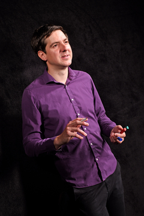

Hands-on CasADi course on optimal control
November 18-20, 2024 – Leuven, Belgium
(download this description as flyer)
Target audience
Academic/industrial researchers or tool-developers that seek practical ways to tackle large/complex continuous optimization problems, and optimal control problems in particular. People seeking to quickly gain familiarity with CasADi through a broad range of practical exercises.
CasADi?
Originating from KU Leuven’s “Optimization in Engineering Center” under guidance of prof. Moritz Diehl, CasADi [1] is an open-source software framework for nonlinear optimization and algorithmic differentiation. It facilitates rapid - yet efficient - implementation of different methods for numerical optimal control, both in an offline context and for nonlinear model predictive control.
Format
Seminars (40%) paired with computer exercises (60%). The seminars provide a bird’s-eye view on optimization and optimal control, serving as teaser for further study or as recap for the experienced. The computer exercises aim to deepen understanding of the theory, and leave the participants well-equipped to solve a broad range of problems using CasADi by themselves.
Covered topics
Newton-type methods for constrained nonlinear programming – integration methods – direct transcription of optimal control problems (OCP) – model predictive control (MPC) – CasADi 3.6 syntax and best practices
(click for more details)
- Module 1: Rootfinding on a nonlinear set of equations: Newton's method
-
- Understand the Newton step in a high-dimensional search space
- Understand how (approximated) Jacobians are central to the Newton's method
- Using CasADi to evaluate Jacobians
- Understand some common failure modes of Newton's method
- Module 2: CasADi basics: Expressions graphs and Functions
-
- Get a clear mental image on basic CasADi concepts
- Get acquainted with a consistent vocabulary to talk about CasADi concepts
- Reason about CasADi types
- Learn to read CasADi error messages
- Module 3: Constraint nonlinear programming: Newton-type methods and interior point
-
- Understand the conditions for optimality
- Understand how Newton-type methods orginate from rootfinding
- Learn how to build an SQP and interior point method in CasADi
- Module 4: Integration of CasADi integrator, rootfinder and nonlinear programming
-
- Learn how to compose CasADi building blocks to solve non-trivial engineering problems
- Module 5: CasADi Opti stack for easy nonlinear programming
-
- Learn how to use Opti for nonlinear programming
- Learn some simple debugging skills for common failure cases of nonlinear programming
- Module 6: Nonlinear programming for fitting problems
-
- Understand how several fitting algorithms are related
- Learn how to use L1 and L2 norms in CasADi
- Understand the robustness property of L1 norm
- Solve a parameter estimation problem from scratch in Opti
- Module 7: Direct methods for optimal control
-
- Understand single shooting and multipleshooting
- Understand the sparsity structure present in multiple shooting
- Learn how to choose between single- and multiple shooting
- Module 8: Implementing model predictive control in CasADi
-
- Understand MPC as an extension of optimal control
- Learn how to speed up a CasADi MPC problem
- Understand that MPC does not necessarily lead to a good controller
- Module 9: Time-optimal control in CasADi
-
- Understand how time-optimal control is intrinsically harder
- Understand the difference between trajectory tracking and path tracking
- Learn how to implement periodic racing problems
- Learn how to interpret Lagrange multipliers
- Module 10: Dealing with non-smoothness in optimal control
-
- Learn how destroy convergence.
- Learn how artificial smoothing is a pragmatic strategy with trade-offs.
- Learn how an exact reformulation can avoid trade-offs.
- Module 11: Perform integration of system dynamics with collocation.
-
- Get an intuitive understanding of a collocation method
- Understand the connection to rootfinding
- Module 12: Another direct method for optimal control: direct collocation
-
- Understand how direct collocation differs from multiple shooting with a collocation integrator
- Learn how to implement direct collocation
- Understand the sparsity structure resulting from direct collocation
- Learn the benefits of direct collocation
Prerequisites
Basic mathematical skills (analysis, calculus, linear algebra) are required. Experience with programming in MATLAB/Octave or Python is required, unless you partner up with an experienced person.
Tutor
Joris Gillis obtained his PhD in electrical engineering at KU Leuven in 2015. Currently active at MECO, KU Leuven and part-time freelancer, he pursues large-scale applications in optimal control and is highly active as a main developer of CasADi since 2010.
Practicalities
The course will take place at the Park Inn hotel, Martelarenlaan 36, 3010 Leuven, Belgium, starting each day at 9:00 and ending at 18:00. Participants are required to bring their own laptops (Linux/Windows/Mac); no software is needed besides a working installation of MATLAB/Octave or Python.
Registration
The registration fee amounts to 1050 EUR excl. VAT (850 EUR for PhD students). Early bird discount (75 EUR) applies until July 1. The registration fee covers for daily mini-breakfasts, refreshments during the breaks, and lunch. A joint dinner is included on Tuesday evening. Lodging is not included.
The number of participants is capped to 40. Registration closes October 20.
Subscribe to the newsletter if you wish to be kept up to date of further courses. You may also pre-register to a future course to get priority in registration, or follow a pre-recorded course.
Organizer: Joris Gillis, joris@yacoda.com, +32496432937, Yacoda BV, Glabbeeksestraat 37, 3300 Vissenaken, Belgium. BE0642979742
[1] Joel A. E. Andersson, Joris Gillis, Greg Horn, James B. Rawlings, M. Diehl, “CasADi – A software framework for nonlinear optimization and optimal control,” Mathematical Programming Computation, 2018.